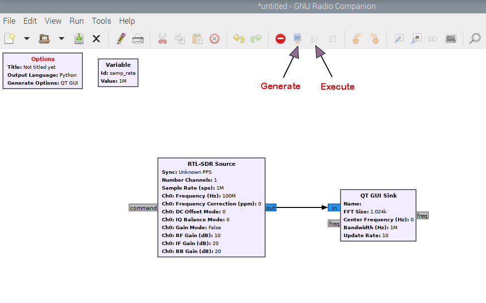
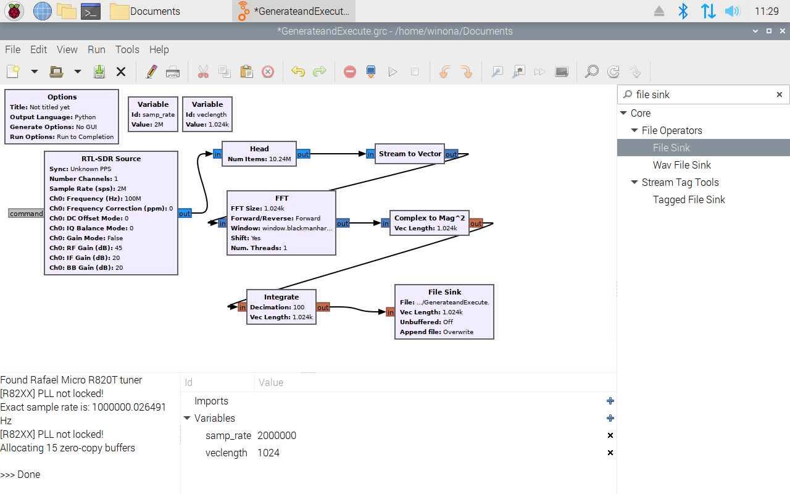
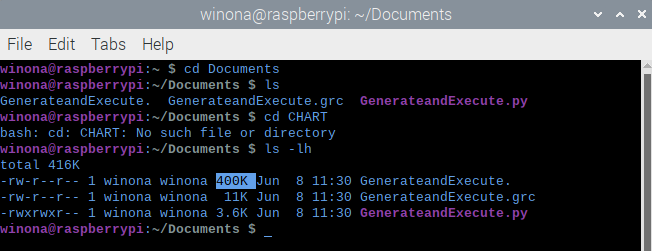

How the Hardware Setup Should Look.
Connect the RTL-SDR input to the raspberry pi and connect radio antenna source to the RTL-SDR input so that we can see real radio data in our program. Make sure to elongate the antennas fully so that you can receive a strong radio signal.

Take your first radio data
We are going to open up your newly installed GNU Radio using a command in the terminal:
You are welcome to visit the links below to learn more about the GNU Radio and the blocks we are about to create.
Tutorials
More info
1. After gnuradio opens, we will make a simple flow chart
I also modified my default Variable box to a Value: 1M, but this is only a personal preference.
Finding RTL-SDR Block

Finding Sink Block

Connecting the blocks to each other so that they can interact.

2. Set the correct variable numbers to change how frequently we will sample data.
We also want to change the center frequency to 100,000,000.
3. Now we can save the block formation in your raspberry pi
We want to save the block sheet with the title LastName-Date.
4. Now that this file is saved, we can generate and execute to collect data.
Where to Find the "Execute" and "Generate" Flow Graph Buttons.
5. A new window will pop up that displays incoming radio data.
We want to look at what frequencies are being displayed. You can view the data in multiple ways.
This is the data that we collected.

Congratulations, you have collected your first radio data set!
Create a Spectrum Flowchart and Save the Data
Now that you've familiarized yourself with gnuradio, it's time to create a more complex flowchart. The goal of this flowchart is to create a spectrum estimator, which will help us observe which frequencies our radios can record. The final part of this lesson goes over how to save and locate your recorded data.1. Start off with creating a new flowchart.
This flow chart will be named LastName-recorded-Date

2. Change the settings in the Option block to run and collect all the data we want.
3. Change the variable block to use in future blocks.

4. We are going to add the 'RTL-SDR Source' block and change some values inside.
Lets add the block first.

5. We are going to create a new variable to use in blocks in the future.
Create a variable block and name it 'veclength' as shown below.

6. Now we will add a 'Head' block.
This block will limit the amount of data that will be processed.
Connect the head block to the 'RTL-Source' block.
7. Create new blocks and use the variable 'veclength'.
Add a 'Stream to Vector' block.
Add an 'FFT' block. This will convert the data into a Fast Fourier Transform.
Add a 'Complex to Mag^2' block. This block makes all the data values real by squaring the complex numbers.

Add an 'Integrate' block. This reduces the data size by averaging every 100 items into one item.
Finally, add a 'File Sink' block. This will write the data into a file on your computer.

Here is how the final flowchart should look:
8. Generate and Execute your flow chart.
9. Double check your data was written in the desired location.
We will get to see all of the contents/folders in your current location on the computer.
cd *space* [insert location] allows you to go into any directory to see what is in it.
For example: I started by typing ls into my terminal and pressed enter. This will show me the contents of the place I’m located on my computer. If I don’t remember exactly where I put the saved data, but I know the way to find it, I then find a file that would help me navigate closer to my desired data using cd [the place I want to go]. For example here is the code I used to find my “Waterfall Tutorial” file that I used to download my data to:
*At the bottom you will see that once I located my file, I typed ls -lh to see how big my file was. The fact that it is 400k (400 kilobytes) tells me that I have located my file. To see why this is, proceed to the next tutorial below "Is Our Data Size Correct?"
Is our Data Size Correct?
Congratulations, you have created your first complete flowchart! Now, how do you know that the amount of data you collected was correct and that this experiment went according to plan? Let’s go through what each block does and how much data it takes in so that we can check that we did everything correctly. Before we start I want to make clarifications between some vocabulary I will be using in this section.
Sample: This is how much data is collected per second. In this tutorial we chose 2,000,000 or 2 x 106. In each of our ‘samples’ we collect 2 numbers.
Bit: Short for “binary digit”. This is the smallest unit of data in a computer. A bit has a single binary value of 1 or 0.
Byte: Equal to 8 bits.
Kilobyte (kB): Equal to 1024 bytes. (Try not to get this confused with the normal 1000=kilo).
Vector: In this context a vector is how we will be organizing our data so that we can process it in a following step.
Integers: In binary, integers (whole numbers that aren’t a decimal or fraction) take up 32 bits worth of data.
Complex 32: *Need help on this*
Float 32: *Need help on this*
RTL-SDR Source: This controls how much data we initially take in from the telescope itself. We set a parameter of 2 million samples per second. For each sample that we take, we get 2 numbers. For each number we use 32 bits of data. If we do a quick calculation we see that we are taking in 1.28 x 108 bits per second.

Head: This block limits the total number of samples that will be collected, in this case 10,240,000 or 1.024 x 107. From this, we can calculate how much time our total data collection should take.

If your data collection took around this time, it’s another indicator that our data collection probably went smoothly.
Stream to Vector: We usually call whatever is input and output of a block an “item”. This block takes 1024 samples (input as individual items), and outputs them as one item vector of 1024 samples. We do this because in order to complete the next task (fast Fourier transform) we need a certain amount of samples at a time to complete this calculation. Here is what our item number looks like before and after our “stream to vector”:

FFT (Fast Fourier Transform): This block takes our data and finally puts it into a form (sin and cos waves) that is useful for us to use. Each vector is considered a time with a certain frequency. This allows us to have a graph with axis of time and frequency.
Complex to Mag^2: So far we have had two numbers per sample: a real and imaginary (complex) number. This block takes our real and complex numbers, squares each of them, and adds the values. This changes our input of a complex 32 to a float 32.
This implements the following function:
(real number in)^2 + (complex number in)^2 = new single number real output

Integrate:This block reduces the data size by averaging every 100 values into one value. We can take out current bit value and divide by 100.

According to our previous calculations, the program is supposed to run for 5.12 seconds, so we will multiply our bits per second by 5.12 seconds.

We will now do a few conversions so that we can put this value into kilobits.
Converting bits to bytes:

Converting bytes to kilobytes:

Congratulations, you completed this tutorial and proved that the amount of data you received is correct.
Take data with installable package
While using GNUradio can be a great way to understand how data taking works and allows you to look at your data in real time, another method to take and save data is by using the installable CHART package at the CHART GitHub repository. with installation instructions in the readme.md file.
Upon installing the package, the data taking process can be started from the daq folder, with the python script freq_and_time_scan.py. The appropriate syntax
is to type
python freq_and_time_scan.py --argument=value --argument=value --etc
Current arguments and their defaults are as follows:
| Argument | Default Value | Type | Docstring |
|---|---|---|---|
| --scan_period | 0.001 | Float | Time between a scan and the next, in hours. |
| --total_time | 0.001 | Float | Total time for all scans, in hours. |
| --freq_i | 1410. | Float | Starting frequency, in MHz. |
| --freq_f | 1430. | Float | Ending frequency, in MHz. |
| --df | 1. | Float | Frequency tuning step size, in MHz. |
| --sleep_time | 5. | Float | Sleep time between checks for next scan time, in seconds. |
| --veclength | 1024 | int | Vector length (number of channels) for spectrum estimation. |
| --samp_rate | 2. | Float | Sample rate of the radio, in MHz. |
| --int_length | 100 | int | Number of samples per integration. |
| --int_time | None | Float | Integration time, in seconds. Overrides the --int_length argument |
| --nint | 500. | int | Number of integrations per file. |
| --data_dir | None | str | Data directory. Defaults to current working directory. |
A recommended example call for a simple 21cm observation as a test is as follows (all one line):
python freq_and_time_scan.py --freq_i=1390 --freq_f=1450 --nint=20 --int_time=0.5 --data_dir='path/to/directory'
Use the GUI to collect data
A G.U.I stands for a Graphical User Interface. Directly communicating with the command line can be hard to understand. Because of this, we have created an easy interface to interact with when taking data.
All you need to do is open the CHART_GUI file located on your desktop. If you wish to view what is happening behind the scenes, click Execute in Terminal.
This is what you should see when it executes.

Tip: You can use all the default parameters by clicking the slider at the bottom. If you do not change a value in a text area, the default parameter will be used as shown below.


You can close this window pop-up and continue after evaluating your situation.

Tip: You can use system date and time if the time in the upper right corner of your screen is correct. You can also use it when you are connected to the internet. 

Tip: You can stop the trial at any time by clicking Stop. Once Start is re-enabled, the data has been taken and you can now take more data.
If you receive an error as shown below, change your trial number to continue.

Once you have finished taking data and are connected to the internet, open Jupyter Hub and sign in.
You will need to upload all the files in .zip format to be imported into the database. The GUI has already zipped the files for you so you don't have to. We will use a database to search for files later when you want to analyze data.
Continue this process until you have uploaded all the files you want.